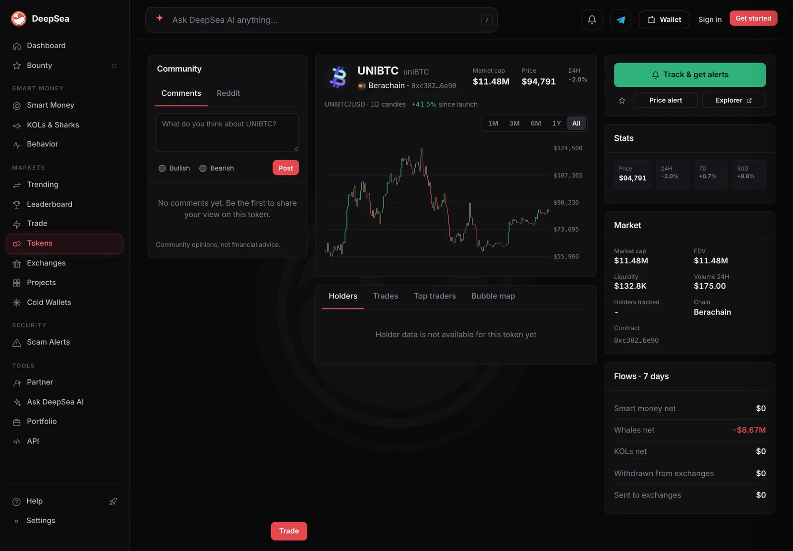
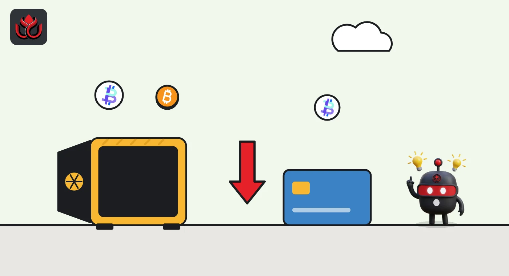

Sharks "sold" $16.31 million of uniBTC on Berachain. CoinGecko saw $591 of trading
DeepSea's live feed logged two wallets moving about 212 uniBTC out on Berachain in 24 hours. One of them is a DEX pool, and CoinGecko counted less than $600 of uniBTC trading worldwide in the same day.
Key points
- DeepSea's 24-hour shark table puts uniBTC on Berachain at the top of the selling list: $16.31 million sold and $7.66 million bought, by two wallets.
- DexPaprika identifies one of the two "sellers" as a Kodiak V3 brBTC/uniBTC liquidity pool, not a trader.
- CoinGecko counted just $591 of uniBTC trading volume worldwide in the same 24 hours. That fits tokens moving between a pool and a wallet better than a market sell-off, but we could not check the transfers on Berascan.
 What DeepSea's data shows
What DeepSea's data shows
DeepSea's live feed adds up what tracked shark wallets (large, active traders) bought and sold in the last hour and the last 24 hours. In the 24-hour table made at 12:35 a.m. ET on November 7, the top entry on the selling side is uniBTC on Berachain: $16.31 million sold and $7.66 million bought, by two wallets.
The wallet table splits it. A wallet ending in 6e90, with no DeepSea label beyond shark, bought $7.66 million and sold $8.68 million on Berachain. The second address, ending in d32b, shows $7.64 million sold and nothing bought. Together the two wallets' sales come to about $16.32 million, almost exactly the $16.31 million uniBTC total. At CoinGecko's price that is about 212 uniBTC, roughly 6.7% of the token's supply.
DeepSea's own uniBTC page for Berachain points the same way. At 12:45 a.m. ET it showed $132,800 of liquidity, $175 of 24-hour volume and a 7-day whale net flow of minus $8.67 million, close to what the 6e90 wallet sold.

Data: DeepSea (desea.io), checked November 7, 2026, 12:35 a.m. ET.
What is uniBTC?
uniBTC is a wrapped bitcoin token issued by Bedrock. It tracks the price of bitcoin and is issued on several networks, Berachain among them. CoinGecko showed it at $76,940 at 12:43 a.m. ET on November 7, down 0.3% in 24 hours, with about 3,187 tokens in circulation worth $245.2 million.
One "seller" is a pool
The address ending in d32b is not a person. DexPaprika lists it as a Kodiak V3 brBTC/uniBTC pool, created April 16, 2025, holding about $4.01 million of the two tokens. brBTC is another Bedrock bitcoin token. A pool is a smart contract that holds two tokens so people can swap between them. When liquidity is pulled out, the pool sends tokens away, and a tracker can read that as a sale.
DexPaprika's uniBTC page for Berachain shows about $2.14 million of liquidity across 15 pools. On DexScreener, a uniBTC/NECT pair had $136,000 of liquidity and about $2,300 of volume.
uniBTC, DeepSea shark flows vs. market data
US$ million
November 7, 2026, 12:35 to 12:43 a.m. ET. Sources: DeepSea, DexPaprika, CoinGecko.

Why it matters
A $16 million "sell" sounds like a big exit. But DexPaprika counts only about $2.14 million of uniBTC liquidity on Berachain, and CoinGecko counted $591 of uniBTC trades worldwide in 24 hours. The likelier reading is tokens moving between a pool and a wallet. We cannot say who controls the 6e90 wallet or why it moved.
We checked DeepSea against DexPaprika, DexScreener and CoinGecko. LC Insight could not open the Berascan explorer in this run, so the individual transactions are not confirmed here.
LC Insight analysis
This section is our reading of the facts above, not a statement of fact.
- We think this is a data lesson more than a market event. Flow trackers count tokens leaving a wallet, which can be a trade, a transfer or a liquidity move.
- The quick test is size against the market. When "selling" is thousands of times larger than the token's daily volume, it is probably not selling.
- The brBTC/uniBTC pool is worth watching. If its reserves drop sharply, liquidity on Berachain gets thinner for both Bedrock tokens.
What's next
- Whether the Kodiak brBTC/uniBTC pool's reserves fall below $4 million
- Where the 6e90 wallet sends the uniBTC next
- Whether uniBTC trading volume on CoinGecko picks up
Disclaimer. This article is based on public information and the sources listed below as of the update time shown. It is for information only and is not investment, legal or tax advice. Figures may change as companies and authorities publish new data.
Sources
- DeepSea live feed, 24-hour shark aggregates (made November 7, 2026, 12:35 a.m. ET)
- DeepSea, uniBTC (Berachain) token page (checked November 7, 2026, 12:45 a.m. ET)
- DexPaprika, Kodiak V3 brBTC/uniBTC pool on Berachain (checked November 7, 2026, 12:45 a.m. ET)
- DexPaprika, uniBTC on Berachain (checked November 7, 2026, 12:45 a.m. ET)
- DexScreener, uniBTC/NECT on Berachain (checked November 7, 2026, 12:46 a.m. ET)
- CoinGecko, Universal BTC (uniBTC) price and volume (November 7, 2026, 12:43 a.m. ET)
- Bedrock, official site